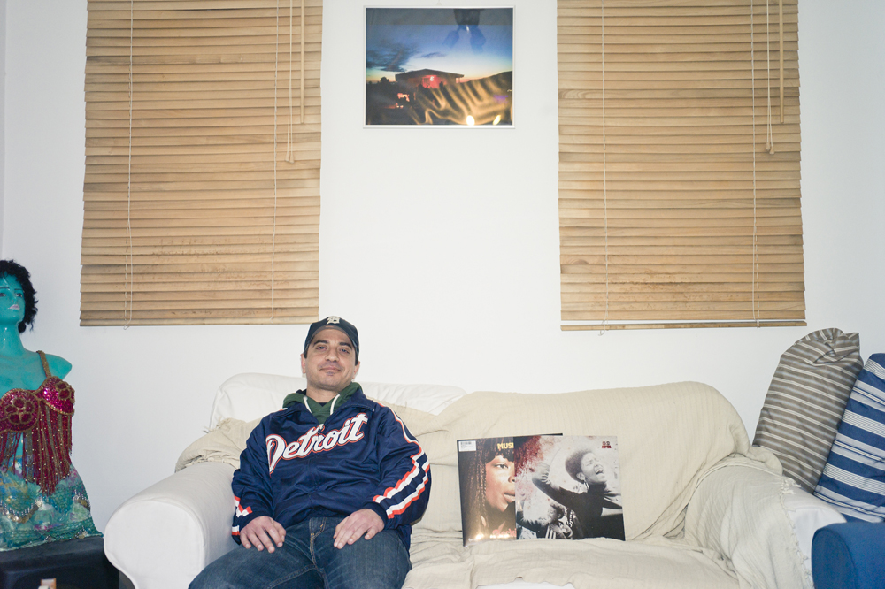

Back
Georges D'André
Producer / DJ
Cyprus
Georges’ relationship with music has always been exceptional. As a devoted collector of records, with an appetite for emerging styles and obscure artists, his migration to the decks was just a matter of time. Having cut his teeth in the local house party scene, he has finally made his anticipated debut with tunes ranging from new and old House, Deep House and Disco.

photo: pan